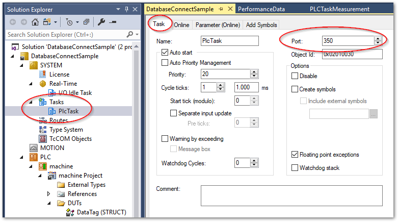
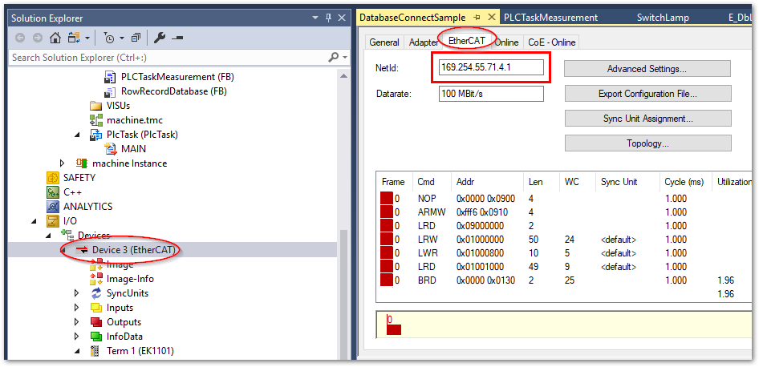

付録：PLC側のパフォーマンスデータを収集するファンクションブロックの作成#
下記の通りIPCのタスク実行時間、レイテンシ、Exceedカウンタ、EtherCATのパケット統計等が測定できるファンクションブロック PLCTaskMeasurement を作成します。このファンクションブロックにより次の出力変数から各種メトリクスを収集することができます。
PLCTaskMeasurement ファンクションブロック仕様#
入力変数#
変数名 |
型 |
説明 |
|---|---|---|
ads_port_of_task |
UINT |
Exceedカウンタを取得したい対象のタスクのADSポートを指定します。 |
ec_master_netid |
T_AmsNetId |
EtherCAT関連のデータ収集に必要なマスターのAMS NetIDを設定します。 |
タスクのADSPortの調べ方#
次図の通り、タスクツリーの Task タブ内に Port番号が定義されています。PLCタスクのデフォルトは350です。本ファンクションブロックでは初期値として350が設定されます。
{kind=link}

EtherCAT マスターのAMS NetIDの調べ方#
Solution Explorer の以下のメニューから、EtherCAT タブを開いて頂いた中の NetId: の個所にEtherCATマスターのAMS NetIDが設定されています。
TwinCATのプロジェクトツリー > IO > Device *
{kind=link}

EtherCATのメトリクスについて
ここに示す例はEtherCAT マスターのフレームレートのみですが、以下のサイトをご参考頂ければ接続されたSlaveの通信異常などの状態監視を行う事も可能です。
https://infosys.beckhoff.com/content/1033/tcplclib_tc2_ethercat/57009931.html?id=6861631674371256185
出力変数#
変数名 |
型 |
説明 |
|---|---|---|
total_task_time |
UDINT |
前回のサイクルで実行したPLCのタスクの総実行時間。100\(ns\)単位 |
cpu_usage |
UDINT |
前回のサイクルでPLCタスクがCPUコアを使用した占有率（\(\%\)） |
latency |
UDINT |
前回のサイクルで測定した瞬時レイテンシ。\(\mu s\)単位 |
max_latency |
UDINT |
前回PLCがリセットされてからの最大レイテンシ。\(\mu s\)単位 |
exceed_counter |
UDINT |
タスクのサイクル時間を超過して完了できなかったサイクル数 |
ec_lost_frames |
UDINT |
消失したEtherCATパケット数 |
ec_frame_rate |
LREAL |
1秒あたりに投げられたEtherCATパケット数 |
ec_lost_q_frames |
UDINT |
タスクからキューインされたEtherCATパケットで消失した数 |
ec_q_frame_rate |
LREAL |
タスクからキューインされた1秒あたりのEtherCATパケット数 |
system_time |
ULINT |
現在時刻 |
コード#
FUNCTION_BLOCK PLCTaskMeasurement
VAR_INPUT
ads_port_of_task: UINT := 350;
ec_master_netid: T_AmsNetId;
END_VAR
VAR_OUTPUT
total_task_time: UDINT;
max_latency: UDINT;
latency: UDINT;
exceed_counter: UDINT;
cpu_usage: UDINT;
ec_lost_frames: UDINT;
ec_frame_rate: LREAL;
ec_lost_q_frames: UDINT;
ec_q_frame_rate: LREAL;
system_time: ULINT;
END_VAR
VAR
// For PLC task execution time
get_task_idx : GETCURTASKINDEX;
// CPU Usage
fb_cpu_usage: TC_CpuUsage;
_get_cpu_usage: BOOL;
// Latency
fb_get_latency: TC_SysLatency;
_get_latency: BOOL;
// Exceed Counter
fb_read_exceed_counter: FB_ReadTaskExceedCounter;
_get_exceed_counter: BOOL;
// EtherCAT
fb_ec_master_frame_statistic :FB_EcMasterFrameStatistic;
_get_ecat_diag: BOOL;
END_VAR
// get current time
system_time := F_GetSystemTime();
// Total Task Time
total_task_time := F_GetTaskTotalTime(nTaskIndex := get_task_idx.index);
// CPU usage report
IF NOT _get_cpu_usage THEN
fb_cpu_usage(START := TRUE);
_get_cpu_usage := TRUE;
ELSE
fb_cpu_usage(START := FALSE);
IF NOT fb_cpu_usage.BUSY THEN
cpu_usage := fb_cpu_usage.USAGE;
_get_cpu_usage := FALSE;
END_IF
END_IF
// Latency report
IF NOT _get_latency THEN
fb_get_latency(START := TRUE);
_get_latency := TRUE;
ELSE
fb_get_latency(START := FALSE);
IF NOT fb_get_latency.BUSY THEN
max_latency := fb_get_latency.MAXIMUM;
latency := fb_get_latency.ACTUAL;
_get_latency := FALSE;
END_IF
END_IF
// Exceed counter
IF NOT _get_exceed_counter THEN
fb_read_exceed_counter(bExecute := TRUE, nTaskAdsPort := ads_port_of_task);
_get_exceed_counter := TRUE;
ELSE
fb_read_exceed_counter(bExecute := FALSE);
IF NOT fb_read_exceed_counter.bBusy THEN
exceed_counter := fb_read_exceed_counter.nExceedCounter;
_get_exceed_counter := FALSE;
END_IF
END_IF
// EtherCAT frame diagnostics
IF NOT _get_ecat_diag THEN
fb_ec_master_frame_statistic(bExecute := TRUE, sNetId := ec_master_netid);
_get_ecat_diag := TRUE;
ELSE
fb_ec_master_frame_statistic(bExecute := FALSE);
IF NOT fb_ec_master_frame_statistic.bBusy THEN
ec_lost_frames := fb_ec_master_frame_statistic.nLostFrames;
ec_frame_rate := fb_ec_master_frame_statistic.fFramesPerSecond;
ec_lost_q_frames := fb_ec_master_frame_statistic.nLostQueuedFrames;
ec_q_frame_rate := fb_ec_master_frame_statistic.fQueuedFramesPerSecond;
_get_ecat_diag := FALSE;
END_IF
END_IF